От физики лазерного воздействия до восстановления меланоцитарной системы:
механизмы, длины волн, накопленная нагрузка, охлаждение и профилактика.
Виталий Микрюков · врач-хирург, к.м.н.
Образование не заканчивается никогда. Специалист, который перестал учиться, начинает отставать — а в лазерном удалении это цена здоровья кожи пациента.
Поэтому вы — в клубе «ЛазерПРО». И я расту вместе с вами: разбираю новые случаи, обновляю протоколы, делюсь тем, что проверил сам.
Оставайтесь там, где растут лучшие — в лучшем месте для экспертов по лазерному удалению.
Не спрашивайте только: «как удалить пигмент?».
Спрашивайте: «как удалить пигмент с минимальной воспалительной
и тепловой нагрузкой на меланоцитарную систему?» Конечная цель лазерной процедуры — не максимальное разрушение, а максимальная селективность. · © В. Микрюков, 2026
Центральная цепочка: лазерная энергия → оптическое взаимодействие → повреждение мишени и окружающей ткани → воспалительная нагрузка → состояние меланоцита → гипопигментация.
Гиперпигментацию разбираем коротко — как контрастный механизм. Основной фокус — гипопигментация.
Осветление кожи после лазера — это не один диагноз, а несколько разных процессов.
После лазерного удаления татуировки осветление может быть связано с принципиально разными процессами. Первые четыре — это преимущественно функциональные и структурные нарушения на уровне самой клетки.
Оставшиеся варианты связаны с воспалением, стойкой потерей клеток и изменениями ткани. Одно и то же осветление на глаз может иметь под собой совершенно разную физиологию.
Главная задача специалиста — определить, какой именно механизм вероятнее всего произошёл: от этого зависит и прогноз, и тактика.
Современный обзор поствоспалительной гипопигментации сводит всё многообразие причин к трём базовым механизмам.
Гипопигментация может возникнуть на любом из этих этапов — и от того, где именно нарушена цепочка, зависит, насколько восстановление вероятно.
Чем глубже затронут меланоцитарный аппарат, тем осторожнее прогноз восстановления.
Меланоцит жив, присутствует и потенциально способен восстановить функцию. Снижен синтез меланина, снижена активность тирозиназы, нарушена передача меланосом.
Прогноз: относительно хорошийРазрушение меланосом, нарушение дендритов, снижение количества функциональных меланоцитов.
Прогноз: зависит от степениПри тяжёлом повреждении снижается само число меланоцитов.
Лазер взаимодействует со всей тканью по её оптическим свойствам — не только с татуировочным пигментом.
Лазерный импульс взаимодействует с тканью по её оптическим свойствам. Он проходит через все слои и встречает на пути множество структур — не только чернила.
На этом пути энергия может расходоваться по-разному:
Основная терапевтическая мишень — татуировочный пигмент. Но у него есть конкурирующие структуры: прежде всего меланинМеланин — собственный пигмент кожи, вырабатываемый меланоцитами эпидермиса. и другие компоненты ткани, которые тоже потенциально поглощают часть энергии.
При 532 нм существенно возрастает конкуренция с эпидермальным меланином. Часть энергии, которую мы хотим направить на красный и оранжевый татуировочный пигмент, может взаимодействовать также с меланином.
| Параметр | 532 нм | 1064 нм Nd:YAG |
|---|---|---|
| Поглощение меланином | высокое | низкое |
| Удаление красного пигмента | эффективно | ограниченно |
| Пигментные осложнения | выше риск | реже |
Классическая работа по 532 и 1064 нм Nd:YAG (Bernstein EF et al.) показала:
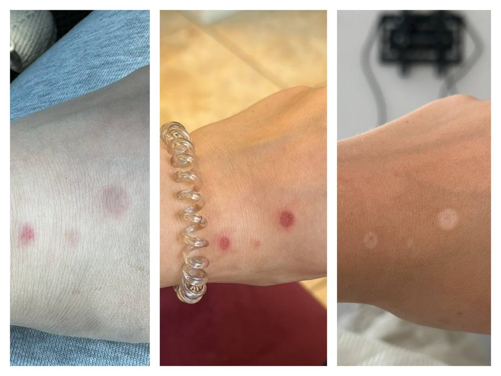
Если бы мишенью был только татуировочный пигмент, чистая кожа не реагировала бы. Но реагирует — потому что при 532 нм сам меланин становится мишенью.
1064 нм значительно меньше поглощается меланином — прямое воздействие на эпидермальный меланин существенно ниже, чем при 532 нм. Это делает его более щадящим, но не полностью нейтральным.
Накопленное повреждение меланоцитарной системы потенциально может возникать при сочетании факторов:
Существуют клинические и гистологические данные о гипопигментации после многократного применения 1064 нм. Ключевое слово — накопление: единичное щадящее воздействие и серия интенсивных воздействий несут разный риск для меланоцитов.
Почему удаление последних процентов пигмента может стать проблемным — и почему не по той причине, о которой обычно думают.
Так объясняют часто, но это неточно: «Пигмента стало мало → и лазерная энергия начинает сильнее поглощаться меланином».
Если параметры воздействия одинаковы, само по себе уменьшение количества татуировочного пигмента не перенаправляет энергию в меланин. Свет проходит ткань по её оптическим свойствам — путь остаётся прежним:
Меланин эпидермиса получает свою долю энергии по тому же закону поглощения — независимо от того, много или мало осталось татуировочного пигмента ниже.
Меняется не распределение энергии между слоями, а сама мишень. После серии процедур количество частиц пигмента снижается, но одновременно происходит несколько сдвигов:
Важно различать три разные величины — их часто называют одним словом «энергия», и отсюда рождается путаница.
Дело не в том, что энергия «переключается» на меланин. Цепочка иная:
Мишени по-прежнему мало — а вот суммарная нагрузка на окружающую нормальную ткань растёт. Меняется соотношение:
Оценим «стоимость» каждой следующей небольшой доли удалённого пигмента через дополнительную нагрузку на нормальную кожу:
Важная оговорка. Это не значит, что последние 10 % всегда опаснее первых 50 %. Это значит другое: эффективность дополнительного энергетического воздействия может снижаться быстрее, чем снижается нагрузка на нормальную ткань.
Остаток — это не «недоудалённая» копия исходного. Частица проходит путь, в котором меняется её размер, глубина и доступность:
Поэтому остаточные 10 % — это не обязательно те же 10 % исходных частиц. Это может быть другая популяция: по размеру, глубине, распределению и биологической доступности.
Увеличение плотности энергии — не единственный способ усилить воздействие на глубокий пигмент. Иногда изменить размер пятна физически рациональнее.
Исследования показывают, что на глубину доставки энергии и эффективность удаления влияют:
В клиническом исследовании 1064 нм больший размер пятна и более однородный профиль луча сопровождались низкой частотой побочных эффектов — хотя гипер- и гипопигментация всё же наблюдались.
Не отдельный импульс, а суммарная и повторная нагрузка на ткань определяет пигментный ответ.
После первого импульса ткань уже не оптически идентична исходной — среда, в которую приходит следующий импульс, изменилась.
Вывод: многопроходность — это не просто арифметическое сложение плотности энергии.
Особенно важно: не пытаться компенсировать недостаточную эффективность бесконтрольным увеличением количества проходов.
1064 нм может быть очень щадящим для меланина при одном воздействии. Но щадящий эффект одного импульса не переносится автоматически на серию.
Клинические и гистологические данные о гипопигментации после частых воздействий 1064 нм расходятся — это само по себе важный сигнал.
Гистологически возможна ситуация: меланоциты присутствуют, но пигмента почти нет.
Вывод: воспаление само по себе не определяет направление изменения пигмента.
Тот же воспалительный процесс может пойти в противоположную сторону. Механизмы вы уже знаете — напомним пунктиром.
Наша задача — понять, почему тот же воспалительный процесс может дать противоположный результат: гипопигментацию. © В. Микрюков, 2026
Направление пигментного ответа — это судьба меланоцита.
Фототип — это конституция. Но лазер видит НЕ конституцию, а меланин, который в коже прямо сейчас.
ФототипФототип по Фицпатрику — классификация I–VI по конституциональной реакции кожи на ультрафиолет (склонность к загару и ожогу). — это характеристика конституциональной реакции кожи на ультрафиолет. Он описывает, как кожа человека в целом склонна отвечать на солнце.
Но фототип — это не измерение текущего количества меланина в конкретной зоне кожи прямо сейчас. Это две разные величины, и путать их не следует.
Пациент с конституциональным фототипом II. Но зона удаления татуировки недавно загорела: она значительно темнее остальной кожи и имеет повышенную текущую меланиновую нагрузку.
Фототип — конституциональная характеристика, он не меняется от приобретённого загара. Такая формулировка подменяет понятия.
Именно эту текущую нагрузку и нужно учитывать при выборе параметров.
При 532 нм меланин — сильный конкурирующий хромофор. Чем больше пигмента в зоне прямо сейчас, тем выше конкуренция за энергию импульса.
Фототип II без загара и фототип II с выраженным загаром — это разные оптические условия для одного и того же импульса:
Текущая меланиновая нагрузка низкая. Конкуренция меланина за энергию 532 нм минимальна.
Текущая меланиновая нагрузка повышена. Конкуренция меланина за энергию 532 нм выше — параметры требуют осторожности.
И естественное солнце, и солярий работают одинаково: ультрафиолет запускает стимуляцию меланогенеза и одновременно вызывает фотоповреждение кожи.
Свежий интенсивный загар следует рассматривать как состояние повышенной меланиновой нагрузки и потенциально изменённой реактивности кожи. Это влияет и на оптику процедуры, и на восстановление.
Автозагар на основе DHADHA (дигидроксиацетон) — вещество, окрашивающее роговой слой через химическую реакцию с аминокислотами. преимущественно окрашивает роговой слой: краситель образуется в химической реакции с аминокислотами, а не за счёт синтеза меланина.
Однако свежий автозагар перед лазерной процедурой всё равно нежелателен:
Светлый прямоугольник — это защищённая от солнца зона удаления: она осталась в исходном тоне, пока кожа вокруг загорела. Это не депигментация, а грамотная фотозащита, которая позволяет не прерывать курс.
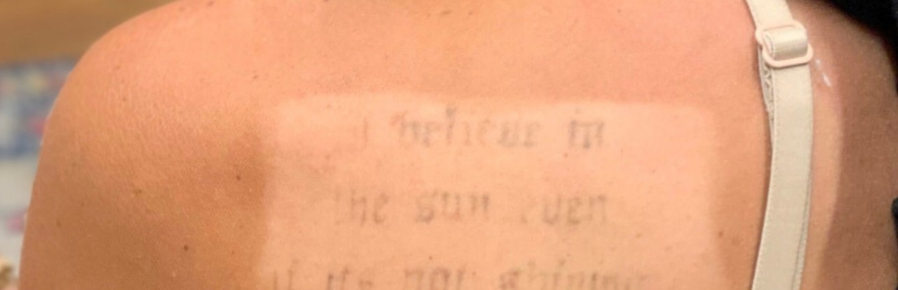
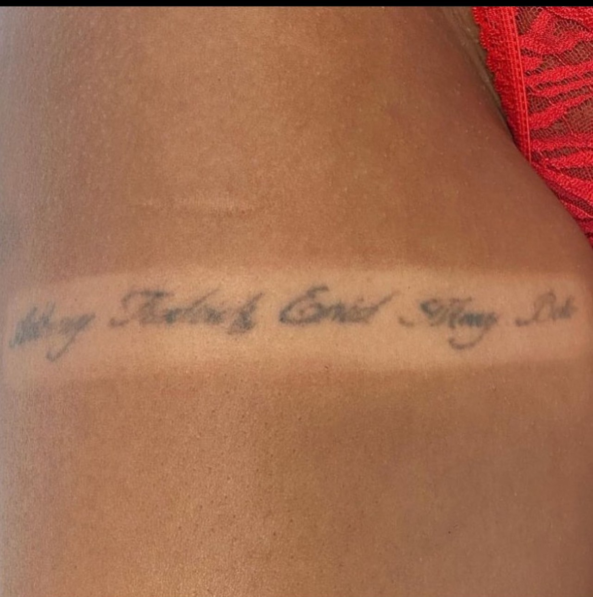
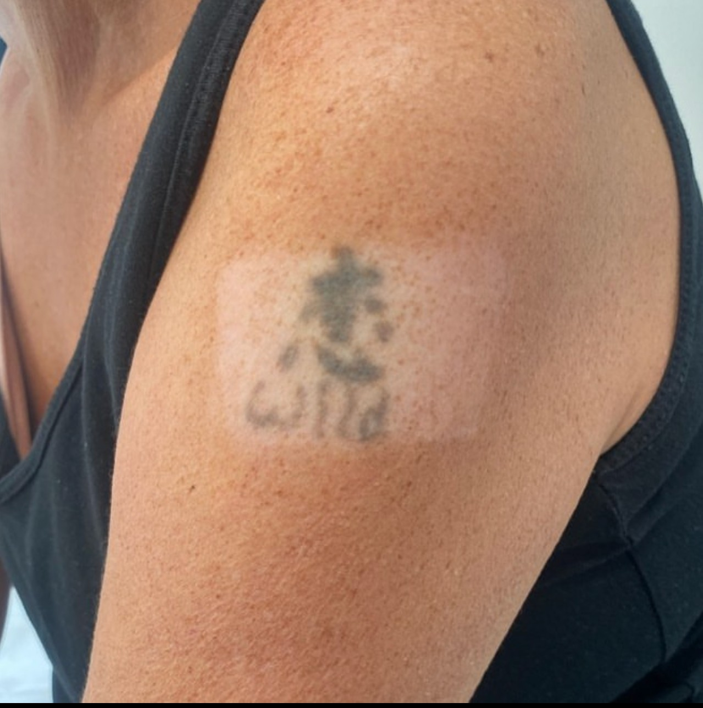
Мы не можем полностью исключить повреждение ткани. Но мы можем контролировать его величину и продолжительность.
Наша настоящая задача — контролировать воспалительную и тепловую нагрузку на кожу. Именно величина и длительность этой нагрузки, а не только факт воздействия, во многом определяют пигментный ответ.
Повлиять на первый шаг мы можем лишь отчасти — он неизбежен. Но средний шаг, воспаление, поддаётся управлению — и здесь охлаждение играет ключевую роль.
Охлаждение действует сразу на несколько аргументов воспалительной нагрузки. Каждая из функций ниже — вклад в снижение риска ↓.
«Охлаждение» — это не одно действие. Мы применяем его только на двух этапах и сознательно отказались от предварительного.
Отводим тепло по ходу обработки — ограничиваем распространение тепла в окружающую ткань.
Контролируем остаточную тепловую и воспалительную нагрузку. Именно умеренное охлаждение, без сверхинтенсивного.
Предварительное охлаждение (до импульса) мы не используем. Охлаждение ткани до воздействия сбивает нормальное течение последующего воспаления: отёк и воспалительная реакция держатся дольше. Поэтому охлаждаем только во время и умеренно сразу после.
После окончания воздействия энергия уже не поступает. Но ткань продолжает жить своей физиологией:
Лазер закончился ≠ биологический процесс закончился
Охлаждение после процедуры потенциально позволяет уменьшить вторичную тепловую и воспалительную нагрузку.
Есть работа, непосредственно посвящённая охлаждённой гидрогелевой повязке после лазерного удаления татуировок для уменьшения дисхромии.
Применение охлаждённой гидрогелевой повязки для уменьшения дисхромии после лазерного удаления татуировок — постпроцедурное охлаждение как способ снизить пигментные нарушения. Feng, Christman, Geronemus. «Application of cooled hydrogel dressing to minimize dyspigmentation from laser tattoo removal». JAAD, 2019
Это ключевой источник рядом с концепцией охлаждения: он показывает клинический интерес к тому, что происходит с тканью уже после выключения лазера.
Работа Feng и соавт. не доказывает универсальный протокол охлаждения для всех лазеров и всех типов кожи. Она показывает клинический интерес к постпроцедурному охлаждению как способу уменьшить дисхромию. Отсюда — важное различие в словах:
«Охлаждение может снижать риск пигментных осложнений»
«Охлаждение гарантированно предотвращает гипо- и гиперпигментацию»
В РКИ различных лазерных и энергетических процедур эпидермальное охлаждение входило в число вмешательств, способных снижать частоту поствоспалительной гиперпигментации.
Это доказательство относится к лазерным и энергетическим процедурам в целом, а не исключительно к удалению татуировок.
При криогенном охлаждении неправильное позиционирование распыления оставляло участки, которые получали лазерную энергию, но охлаждались недостаточно.
Именно неохлаждённые зоны соответствовали характерному серповидному / кольцевидному поствоспалительному потемнению.
Повреждение ткани определяет не только количество лазерной энергии, но и пространственное распределение охлаждения.
Охлаждение снижает тепловую и воспалительную нагрузку. Но слишком агрессивное охлаждение само может стать фактором травмы:
Способно повредить ткань не меньше, чем избыточное тепло.
Меняет местное кровоснабжение и условия восстановления.
Неоднородное распределение температуры по зоне.
Превращается в отдельный источник повреждения.
Постпроцедурный клинический результат зависит не только от механического разрушения татуировочного пигмента, но и от величины и продолжительности воспалительной нагрузки, которую получает нормальная кожа.
Поэтому на риск осложнений мы можем воздействовать сразу по нескольким направлениям одновременно:
Каждое слагаемое по отдельности уменьшает нагрузку на здоровую кожу; вместе они формируют предсказуемое и щадящее восстановление.
Управление воспалительной нагрузкой распределено во времени — до, во время и после воздействия.
Минимально необходимая энергия — ровно столько, сколько требуется для работы с пигментом.
Однократное равномерное воздействие без повторного прохода по одному участку.
Контроль остаточной тепловой и воспалительной нагрузки — контролируемым умеренным охлаждением.
При перекрытии соседних пятен локальная плотность энергии в зоне наложения возрастает — даже если средняя плотность энергии по всей зоне выглядит нормальной.
В участках наложения возникают локальные:
Местный перегрев ткани выше запланированного уровня.
Суммарная доза в точке наложения превышает среднюю.
Локально усиленная реакция нормальной кожи.
Вывод: однородность распределения энергии так же важна, как и её среднее значение.
Кожа может получить среднюю дозу X, но отдельный участок — 2X или даже 3X. Именно локальные перегрузки, а не средняя доза, чаще стоят за пигментными осложнениями.
Наложение соседних пятен.
Повторный проход по участку.
Неравномерная энергия внутри пятна.
Сгущает импульсы в одном месте.
Задержка накапливает дозу.
Как отличить обратимое от стойкого, что делать сразу и когда обязательно подключать дерматолога.
Осветление может возникнуть даже без явного повреждения ткани. Отсутствие рубца не означает отсутствие воздействия на пигментную систему.
Причина в том, что меланоцитМеланоцит — клетка, синтезирующая меланин в меланосомах и передающая его окружающим кератиноцитам. и его органеллы могут оказаться значительно чувствительнее к определённому сочетанию длины волны, длительности импульса, повторных воздействий и тепловой нагрузки, чем окружающая соединительная ткань.
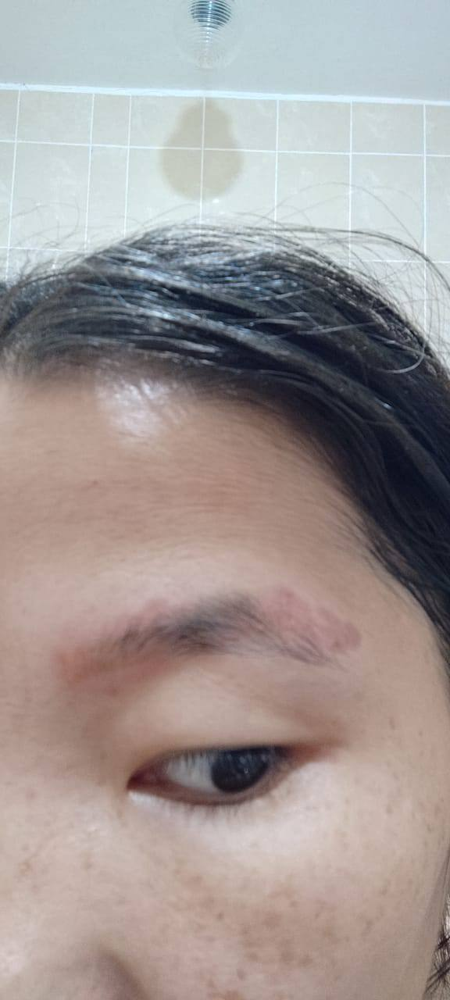
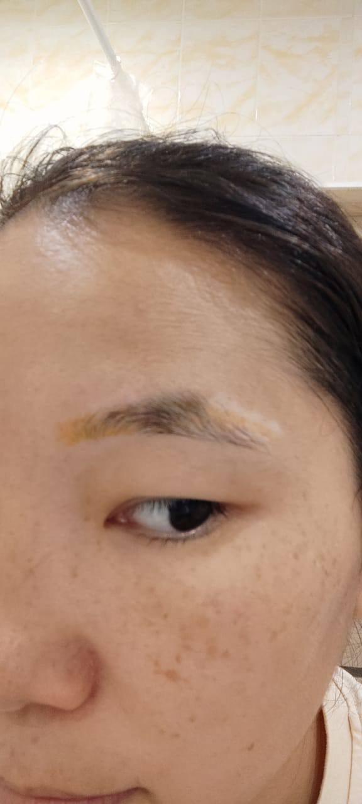
Осветление, которое со временем восстанавливается. Пигментные клетки сохранены, снижена лишь их функция.
Возможный механизм — функциональное подавление меланогенезаМеланогенез — процесс синтеза меланина в меланоцитах. или временное нарушение работы меланосом при сохранном меланоците.
Осветление, которое не восстанавливается со временем. Здесь уже необходима врачебная диагностика.
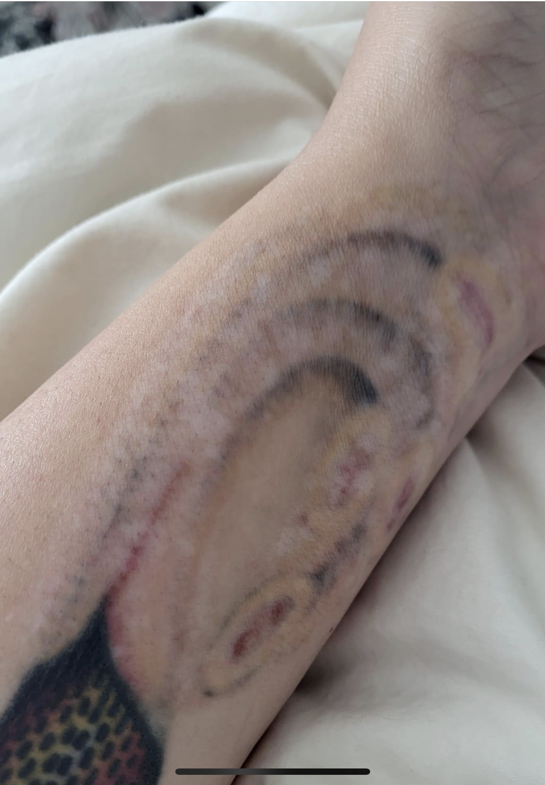
Чем темнее конституциональный фон, тем сильнее контрастирует осветлённый участок — и тем выше стигматизирующий эффект осложнения.
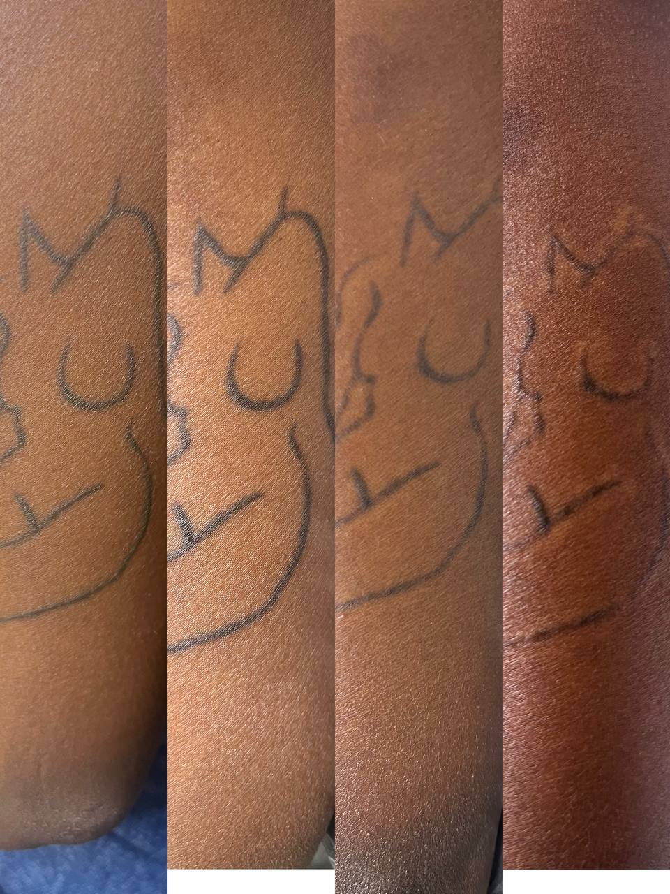
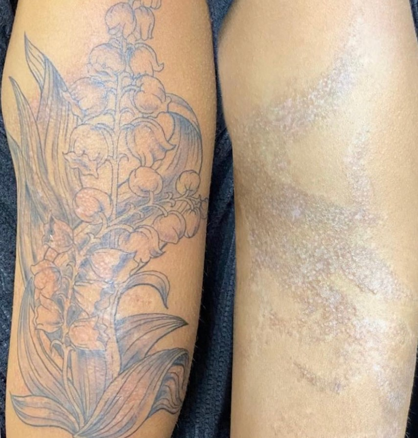
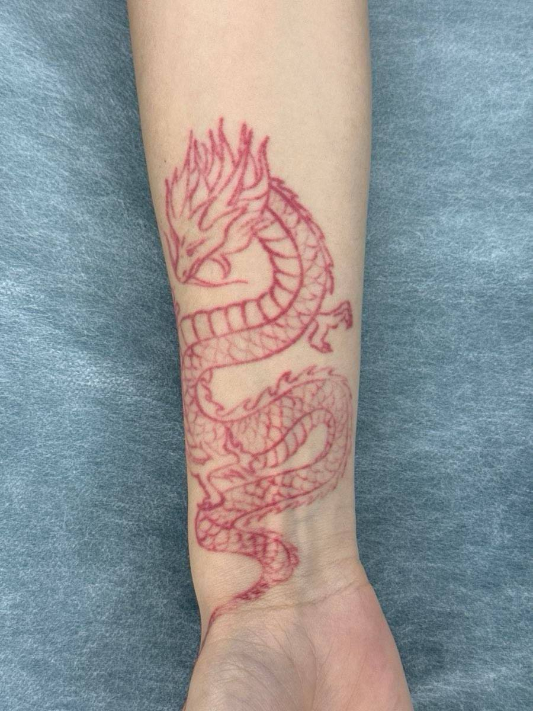
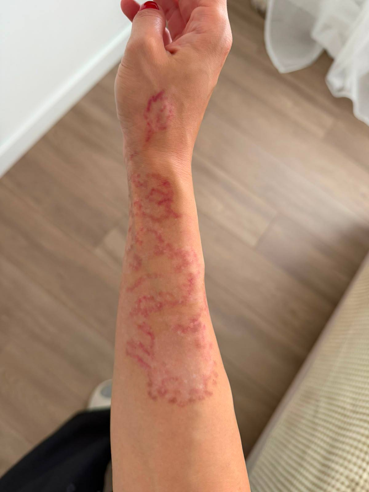
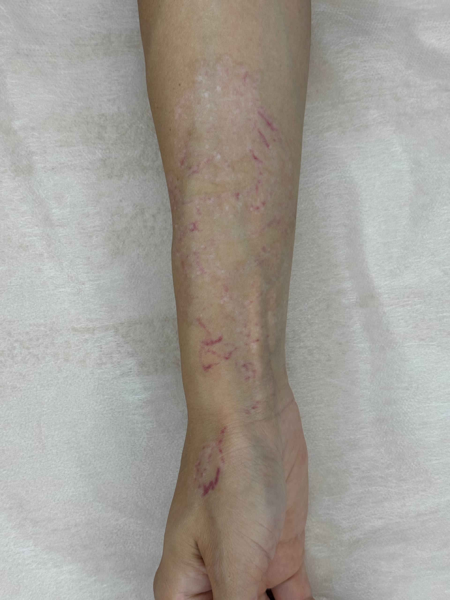
Красные пигменты часто требуют коротких длин волн — а это выше конкуренция с меланином и выше риск пигментного следа.
Нужно исключать витилигоВитилиго — приобретённая депигментация вследствие аутоиммунного разрушения меланоцитов; способна распространяться за пределы исходного очага., если:
Если очаг стабилен, длительно сохраняется и не демонстрирует спонтанного восстановления — можно рассматривать врачебные методы восстановления пигмента.
Опубликован клинический случай стойкой гипопигментации после удаления татуировки Nd:YAG, которую лечили эксимерным лазером 308 нм с достижением репигментации (Gundogan et al., 2004).
Это непосредственно относящееся к теме доказательство: та же природа осложнения и целенаправленное лечение репигментации.
Один клинический случай не является доказательством универсальной эффективности метода.
Есть данные о стимуляции репигментации с помощью биматопростаБиматопрост — аналог простагландина; при местном применении способен стимулировать пигментацию., в том числе в сочетании с фракционными лазерными методами.
Отдельная современная работа исследовала фракционный неабляционный лазер с доставкой биматопроста при поствоспалительной гипопигментации после косметических процедур.
Однако это уже экстраполяция из смежной области, а не стандарт лечения осложнений именно после удаления татуировок.
Как всё соединяется в одну практическую модель — от подготовки до оценки восстановления.
Полностью исключить повреждение ткани при эффективном лазерном удалении пигмента нельзя. Но мы можем контролировать величину и продолжительность этого повреждения.
Задача — не убрать повреждение, а держать его величину и длительность в управляемых пределах.© В. Микрюков, 2026
Охлаждение вмешивается в цепочку: на этапе нагрева оно ограничивает тепловую нагрузку, а потенциально ведёт к тому, что воспаление ↓ → риск дисхромии ↓.
Для постпроцедурного охлаждения после удаления татуировки существует отдельная публикация об охлаждённой гидрогелевой повязке для уменьшения дисхромии (Feng, Christman, Geronemus, 2019).
Нельзя чрезмерно увеличить энергетическую нагрузку, а затем «компенсировать» её охлаждением. Охлаждение — дополнение к грамотным параметрам, а не замена им.
Последние пункты — обоснованная физико-биологическая модель, но не утверждение, что крупные РКИ доказали каждую её часть именно для удаления татуировок.
Она может быть разной природы — и от этого зависит обратимость.
Количество остаточного татуировочного пигмента напрямую не определяет количество энергии, поглощённой меланином. Проблема возникает через ряд промежуточных факторов.
Фототип по Фицпатрику — стартовая точка. Оценивать нужно её вместе с текущей локальной меланиновой нагрузкой.
Это потенциальный инструмент управления нагрузкой на ткань.
Для удаления татуировок существует публикация, специально посвящённая охлаждённой гидрогелевой повязке для уменьшения дисхромии.
Спрашивайте: как удалить пигмент с минимальной воспалительной и тепловой нагрузкой на меланоцитарную систему?
Конечная цель лазерной процедуры — не максимальное разрушение. Конечная цель — максимальная селективность.